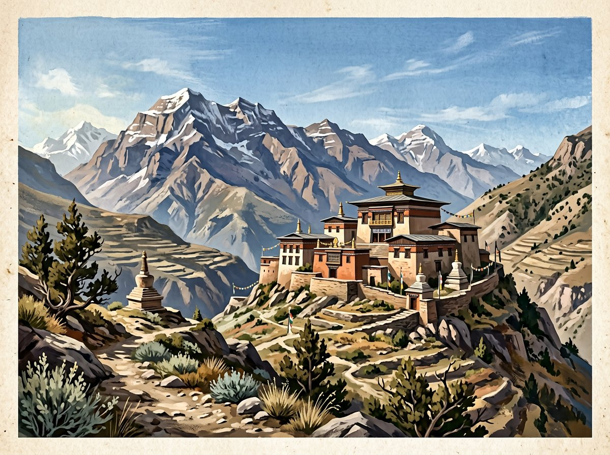

TIBET · HIMALAYAS · LIVING TRADITIONS
Tibetan Buddhism: traditions, symbols and practices
Tibetan Buddhism comprises historically connected yet diverse religious lineages. It developed in Tibet and neighbouring Himalayan regions, drawing on Mahayana teachings and particular forms of Vajrayana; practices and explanations differ among schools and communities.

SCHOOLS AND LINEAGES
Not one uniform system
The Nyingma, Kagyu, Sakya and Gelug schools are often named, alongside other lineages and communities. Each has its own histories of transmission, ritual cycles, texts and ways of teaching. They share some cultural roots, but a symbol or ritual should not be assumed to have the same importance everywhere.
SYMBOLS AND OBJECTS
Mantras, mani wheels, mālās and stupas
Tibetan practices may include mantra recitation, prayer wheels, mālās, images of buddhas and bodhisattvas, stupas, mandalas and offerings. Lungta prayer flags belong to the region’s cultural context. An object’s meaning is shaped by the teachings, ritual and practitioners’ relationship to it.
MONASTERY AND HOME
Practice lives in communities
Monastic study and ritual are only part of religious life. Home prayer, pilgrimage, festivals, family customs and lay practice also matter, though they vary by place and lineage. A short guide cannot replace a teacher’s explanation or capture the full diversity of Tibetan Buddhist communities.